ABOUT ME
Hi there, I'm Xiaohan. (pronounced as 'Shiao Han') :) I'm currently an underguaduate student at Zhejiang University, China. I have rich experience in design and I'm strongly motivated to explore computer system.
I'm a self-motivated dream chaser. People once told me "female can't do engineering", and now I'm working hard to prove that I can, and I am able to do science, especially computer science, very well as a female. You can see my projects here.
I'm a passionate MOOCer. I have completed and earned certificates of 16 online courses from top universities around the world. My way of learning would not stop.
My CV (PDF version) is available [HERE].
COMPUTER SCIENCE


MATHEMATICS

University of California San Diego & National Research University Higher School of Economics

University of California San Diego & National Research University Higher School of Economics
INTERACTION DESIGN
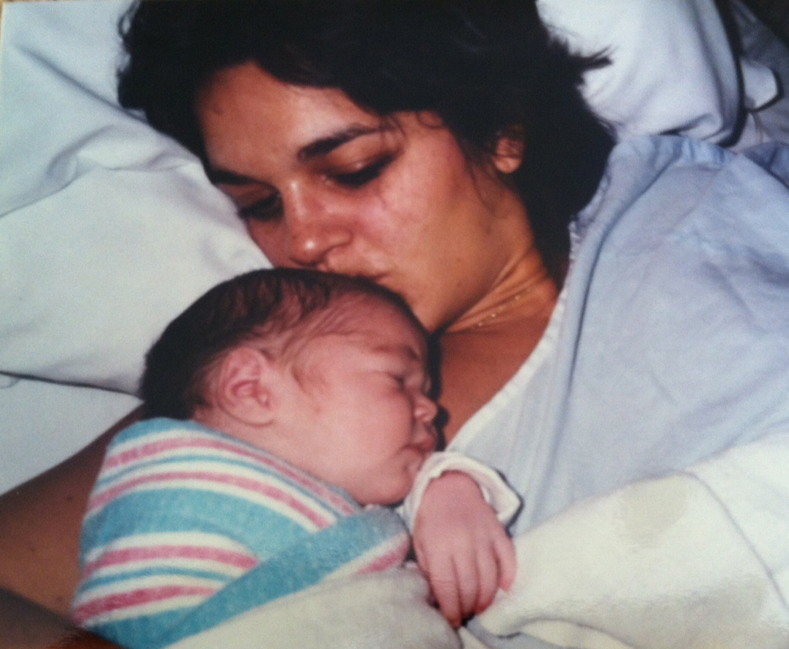
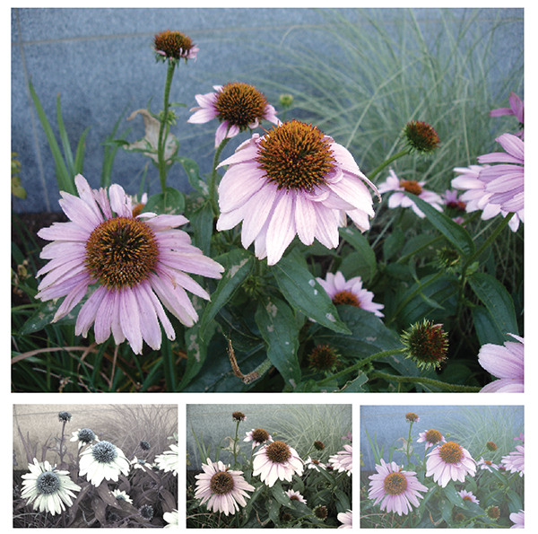
Digital Artifacts as Legacy
Legacy is the meaningful and complex way in which information, values, and possessions are passed on to others. As digital systems and information become meaningfully parts of people’s everyday and social relationships, it is essential to develop new insights about how technology intersects with legacy and inheritance practices. We designed three interactive systems to investigate how digital materials might be passed down in the future. We conducted in-home interviews with ten parents and used the systems to provoke discussion about how technology might support or complicate their existing practices. Sessions revealed parents desired to treat their digital information in ways not fully supported by technology.
Legacy is the meaningful and complex way in which information, values, and possessions are passed on to others. As digital systems and information become meaningfully parts of people’s everyday and social relationships, it is essential to develop new insights about how technology intersects with legacy and inheritance practices. We designed three interactive systems to investigate how digital materials might be passed down in the future. We conducted in-home interviews with ten parents and used the systems to provoke discussion about how technology might support or complicate their existing practices. Sessions revealed parents desired to treat their digital information in ways not fully supported by technology.
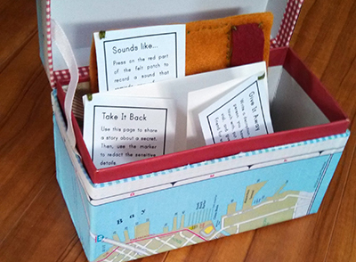
Design Probes and Memory
This work is a set of provocative artifacts that were created as a part of Aisling Kelliher's Design Fiction and Experiential Media Design courses at the School of Design at Carnegie Mellon. These projects explore how to build tools that can augment human memory and how existing systems influence how and what we remember.
This work is a set of provocative artifacts that were created as a part of Aisling Kelliher's Design Fiction and Experiential Media Design courses at the School of Design at Carnegie Mellon. These projects explore how to build tools that can augment human memory and how existing systems influence how and what we remember.
Future Love
This project explores how digital information is changing the processes by which some people find love. For this project, I extended that idea by drawing from personalization and adaptive systems. This work was inspired by the popularity of online dating sites like Match.com and OKCupid and was completed during the Spring semester of 2013 for Aisling Kelliher's class on Speculative Design.
This project explores how digital information is changing the processes by which some people find love. For this project, I extended that idea by drawing from personalization and adaptive systems. This work was inspired by the popularity of online dating sites like Match.com and OKCupid and was completed during the Spring semester of 2013 for Aisling Kelliher's class on Speculative Design.
Curation, Provocation, and Digital Identity
Among the billions of photos that have been contributed to online photo-sharing sites, there are many that are provocative, controversial, and deeply personal. Previous research has examined motivations for sharing images online and has identified several key motivations for doing so: expression, curation of identity, maintaining social connections, and recording experiences. In this work, we used photo-elicitation interviews to explore the motivations for posting provocative, controversial, or deeply personal images and the perceived risks of doing so.
Among the billions of photos that have been contributed to online photo-sharing sites, there are many that are provocative, controversial, and deeply personal. Previous research has examined motivations for sharing images online and has identified several key motivations for doing so: expression, curation of identity, maintaining social connections, and recording experiences. In this work, we used photo-elicitation interviews to explore the motivations for posting provocative, controversial, or deeply personal images and the perceived risks of doing so.
HCII FoodLab
Since spring 2014, I've been teaching about food preservation through the HCII FoodLab. Together we've experimented with a number of different types of food preservation including pickling and fermenting.
 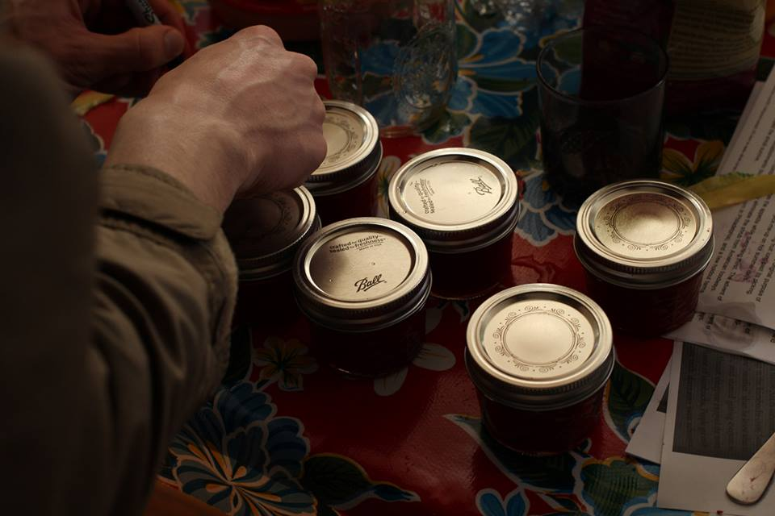
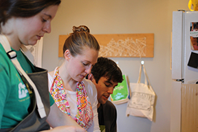
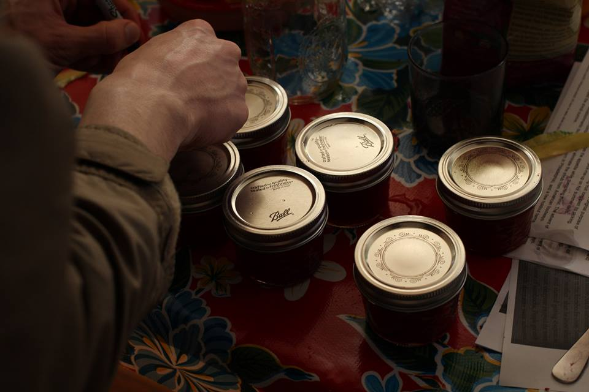
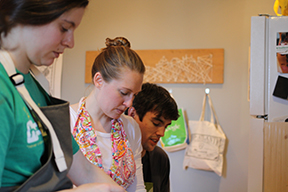
Since spring 2014, I've been teaching about food preservation through the HCII FoodLab. Together we've experimented with a number of different types of food preservation including pickling and fermenting.
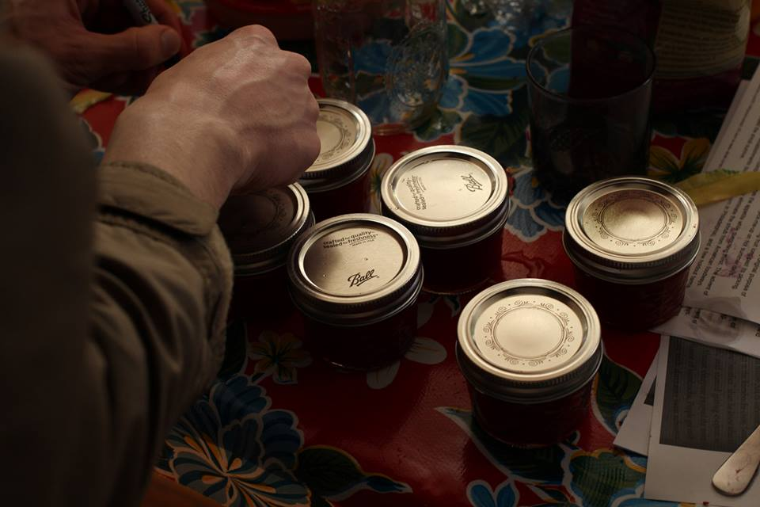
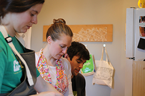
Art, Photography, Linocuts
I paint (mostly watercolor), make prints, and take photos. I took a few classes in undergrad, but now I mostly just try to learn new things.
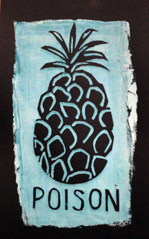 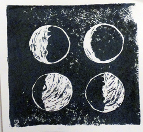
I paint (mostly watercolor), make prints, and take photos. I took a few classes in undergrad, but now I mostly just try to learn new things.
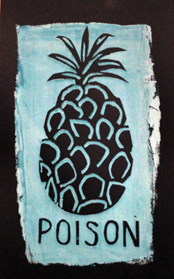 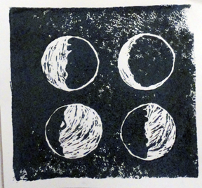
Outdoors
I'm an avid climber and bicyclist. I try to bike in every city I visit (this works out better in some cities than in others) and I love being outside in scenic Western Pennsylvania.
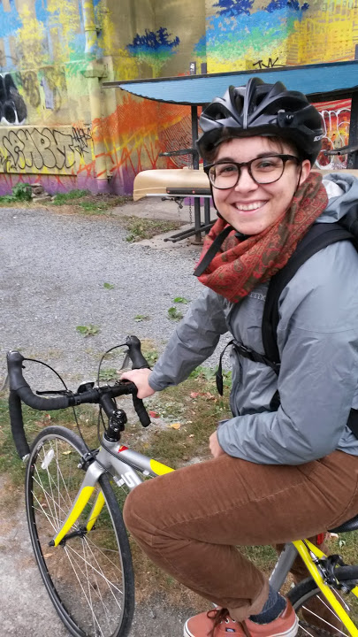
I'm an avid climber and bicyclist. I try to bike in every city I visit (this works out better in some cities than in others) and I love being outside in scenic Western Pennsylvania.
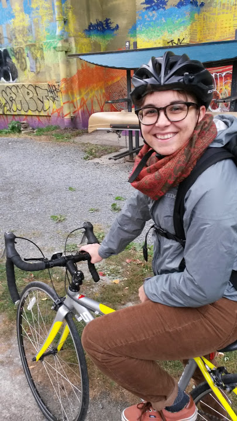